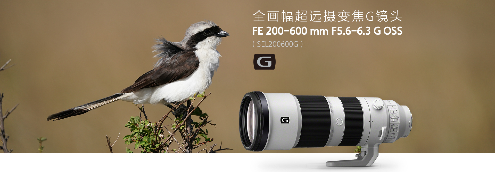

Sony FE 200-600mm F5.6-6.3 G OSS_by SonyAlphaBlog
源：https://sonyalpha.blog/2019/08/14/sony-fe-200-600mm-f5-6-6-3-g-oss/
1 结论
\(\small{\mathbf{SONY}}\) FE200-600 GM OSS F5.6-F6.3（\(\small{12700_{\mathbf{SONY},20220831}}\)）是一只非常棒的远摄镜头，性价比极高，是同类产品中第一支内变焦设计的镜头。
如果像在座的大多数人一样，买不起索十万双雄——\(\small{\mathbf{SONY}}\) 400mm F2.8 GM（\(\small{95000_{\mathbf{SONY},20220831}}\)）和\(\small{\mathbf{SONY}}\) 600mm F4 GM（\(\small{105000_{\mathbf{SONY},20220831}}\)），那么，这只镜头将会是运动和动物摄影的完美工具。由于其出色的内变焦设计，200600 G的锐度和可用性上要比100400 GM更高。

另外，你得关注一下你手头的焦端配置。如果你只有\(\small{\mathbf{SONY}}\) 24-70 F2.8 GM或者\(\small{\mathbf{SONY}}\) 24-105mm F4 G，70mm到200mm之间的焦端缺失需要用\(\small{\mathbf{SONY}}\) 70-200mm F4 G或者\(\small{\mathbf{SONY}}\) 70-200mm F2.8 GM来补充；或者，不追求400mm到600mm焦端的话，选择一只\(\small{\mathbf{SONY}}\) FE 100-400mm F4.5-5.6 GM就挺不错。
200600 G另一个超强的特性是它的背景虚化，真的非常柔和，非常讨喜，压缩效果会让你非常震惊。
200600 G可以配合增距镜使用，但只有在A9上能稳定高效工作。如果时A7R3，建议使用APS-C裁剪模式来获得更长的焦距；当然，直接使用APS-C的A6400也不错
200600 G可以使用转接环，但只有配合A9才能有不错的效果。如果时A7R3，见使用APSC裁剪模式来获得超过600mm的焦端；当然，直接使用A6400作为备机也是可以的。
墙裂推荐
- 优势
- Excellent级别的锐度
- 非常快速的自动对焦
- 背景虚化非常棒
- 内变焦设计
- 总体可用性非常好
- 做工很好
- 焦外光斑非常好
- 无色散
- 抗眩光非常好
- 可使用增距镜TC 1.4和TC 2.0，但只能在A9上使用
- 配合APS-C的A6400，可将焦距扩展至300mm到900mm
- 一般
- 体积超级大，需要一个更加大的背包
- 自动对焦达不到拥有双线性马达的索尼GM系列的顶尖水平
- 枕形畸变，略有暗角，但都可以在LR中自动校正
- 最近对焦距离为2.4m，与适马、腾龙的同类产品一样
- 重量来到2115g，虽然在这个规格下还算标准，但是对于大多数人还是有点重了
- 缺陷
- 光圈较小，无法在A7R3上配合增距镜使用
- 光圈较小，ISO对环境光线要求比较高
- 在一些场景中，图像边缘的焦外光斑会有轻微紫边
2 总体信息
2.1 SPEC
- 重量：2115g（无脚架环）
- 价格：\(\small{12700_{\mathbf{SONY},20220831}}\)
- 长度：
- 318mm（无遮光罩）
- 415mm（有遮光罩）
- 内变焦设计
- 直径：112mm
- 滤镜口径：95mm
- 防尘防潮
- 光学防抖
- 11片圆形光圈叶片
- 200g重的可拆卸脚架环，但在90°处无法进行固定
- 最近对焦距离：240cm，确实有点远
- 放大倍率：0.2
- 镜身有4个开关
- AF/MF切换
- 对焦距离限制
- 光学防抖
- 防抖模式
- 专门设计的2个背带孔
- 内变焦设计
- 使用直驱超声波电机实现快速、安静、精准的对焦
- 线性对焦环
- 5片ED（超低色散）镜片，1片非球面镜
- 纳米抗反射涂层
- 氟化物图层，防水防油渍
- 对焦保持按钮可自定义功能
- 官方标配遮光罩，103mm长，163g重
- 可使用增距镜
- 使用SEL14TC
- 焦距范围：280-840mm
- 光圈：F8-F9
- SEL20TC
- 焦距范围：400-1200mm
- 光圈：F11 – F13
- 使用SEL14TC
- 官方标配便携袋
200600 G是使用\(\small{\mathbf{SONY}}\) E卡口的动物/运动摄影师的心头好，补齐了长焦的又一块碎片。不需要再使用适马的150600或者腾龙的150600，也不再需要将100400 GM配合TC 1.4增距镜，只需要一只镜头就可以获得200-600mm这个焦段。
当然，这只镜头的体积真的是超级巨大，变焦范围也几乎是E卡口之最，但，是，200600 G是内变焦设计，真的鹅妹子嘤啊！与适马和腾龙的同类产品相比，200600 G在巨大的、固定长度的镜身里边实现了变焦，但也损失了使用手感和便携性。另外，内变焦设计可以提供更加出色的防尘效果。
这只镜头是\(\small{\mathbf{SONY}}\)的G系列，所以定价会稍微保守一点（\(\small{12700_{\mathbf{SONY},20220831}}\)），比100400 GM（\(\small{17500_{\mathbf{SONY},20220827}}\)）便宜挺多的。
200600 G的做工是顶级水准。和100400 GM比会有一点点差距，但是防尘防水方面，200600 G无疑做的非常好。
200600 G长度非常长，取下遮光罩都有318mm。如果有人想不开想要挂机直接塞包里，最好量一下你的背～包～。
2.2 遮光罩（ALC-SH-157）
- 长度：103mm
- 重量：163g
- 没有预留滤镜调节孔
- 遮光罩顶端有很厚一层橡胶圈，方便垂直放置镜头，也能在碰撞起到缓冲
2.3 镜身开关/按钮
- AF/MF切换
- 自动对焦范围限制
- 10m以外
- 2.4m到10m
- 无限制
- 光学防抖开关
- 光学防抖模式切换
- 常规模式
- 水平运动模式
- 无规则运动模式
2.4 变焦环
- 对焦环和变焦环转动阻尼设计的非常不错，转动起来非常流畅，不是那种松松垮垮的感觉。
- 200600 G变焦环的转动行程为70°。
- 与100400 GM相比，200600 G凭借内对焦设计在变焦时不发生明显的重心转移；转动变焦环的力度也小很多。
2.5 背带孔
- 200600 G又大又重，你得使用镜身上的背带孔。
2.6 体积（与竞品对比）
与\(\small{\mathbf{SONY}}\) FE 100-400mm GM相比，200600 G尺寸更大，与100400 GM在400mm端加上TC 1.4增距镜的长度几乎一样。
- 200600 G：318mm
- 100400 GM：
- 100mm端：205mm
- 400mm端：285mm
- 400mm端+TC 1.4增距镜：301mm
与使用适马MC11转接环的适马和腾龙的150600相比
- Sigma 150-600mm F5-6.3 Sport
- 长度：
- 150mm端：290mm
- 150mm端+适马MC11增距镜：316mm
- 600mm端：480mm
- 600mm端+适马MC11增距镜：506mm
- 重量：2860g
- 价格：\(\small{8699_{TB,20220910}}\)
- 脚架环不可拆卸
- 长度：
- Tamron 150-600mm F5-6.3
- 长度：
- 150mm端：260mm
- 150mm端+适马MC11增距镜：286mm
- 600mm端：348mm
- 600mm端+适马MC11增距镜：374mm
- 重量：1951g
- 价格：\(\small{7450_{TB,20220910}}\)
- 长度：
适马和腾龙的两只150600在价格上要便宜很多很多，但是内变焦设计的200600 G真的赢的太多了，仅仅在使用上就有无与伦比的美妙体验，跟别提它超快的自动对焦。
这几只镜头，除了100400 GM的最近对焦距离在1m左右，其它几只的最近对焦距离都在2.5m左右。
3 光学性能
3.1 锐度
测试使用4200万像素的A7R3。

200600 G的锐度表现非常惊人，全焦段范围内的中心锐度都是Very Good级别，甚至有部分场景可以达到Excellent级别；收缩光圈带来的锐度提升不是很明显。
3.2 暗角/畸变/色散/眩光/星芒
- 光圈全开的暗角比较小
- 有轻微的枕形畸变
- 没有色散
- 抗眩光表现非常出色
- 光圈小于F16时，星芒表现出色
Lightroom有200600 G的矫正文件。
3.3 背景虚化&色彩还原度
- 背景虚化非常柔和，非常讨喜；本来是没有对这只光圈只有F5.6-6.3的长焦镜头有任何期待的。
- 压缩效果和虚化量会随着焦距拉长而不断增加；600mm端的虚化效果可以和135 GM的效果旗鼓相当了。
- 焦外光斑非常好，总体看上去挺圆的，也很柔和，毕竟200600 G的光圈只有F5.6-6.3。边角的光斑在F8时会开始变差，呈现出奇怪的形状。
- 如果仔细观察边角的光斑，光斑的一侧边缘会有轻微的紫边。
- 色彩还原度非常不错。
3.4 各种场景的使用体验
考虑到200600 G的焦段和被摄物体（体育、动物、鸟…），最低快门速度最好为1/500s。即使时开最大光圈，光线充足情况下的ISO会达到800，阴天的ISP会达到25600。
如果你想降低ISO，那就用600 GM吧，F4大光圈会给你前所未有的体验，价格也是（\(\small{105000_{\mathbf{SONY},20220831}}\)）。
当然，200600 G的变焦可以让你拍摄600定很难获得的构图和追踪效果。
独脚架使用：考虑到200600G的体积，如果需要等待超过10分钟来获取完美的时机，独脚架还是挺不错的。200600 G自带的脚架环可以适配1/4″ -20和3/8″-16两种尺寸的螺丝。
3.5 自动对焦性能&增距镜表现
- 使用A7R3拍摄，自动对焦性能非常不错
- 使用A9拍摄，加上A9的实时追焦能力，自动对焦性能更进一步，非常完美的对焦体验。
尽管200600 G的自动对焦性能很出色，但和拥有双线性对焦马达的那几只镜头比（如400 GM）还是有些差距的，尤其是在拍摄快速移动的对象时。200600 G是一只G镜头，不是GM镜头，在考虑到200600G的售价，我们真的不能再要求更多了。
另外要注意的是，相位对焦（PDAF）对光圈有一定的要求，A7R3上光圈大于F8，A7M3上光圈大于F11，A9上光圈大于F16。
最新版固件的A9有专门针对200600 G进行优化，AFC实时追焦模式下，200mm端光圈F32、600mm端F36可以正常工作。
这就意味着，光圈F9上TC1.4、光圈F13上TC2.0在A7R3上可能无法正常工作，但在A9上完全没有问题，甚至A7M3也可以使用TC1.4。
如果你手上有A7R3或者A7R4，不要忘记使用APSC裁切来获得1600万或2800万像素，等效TC1.5；使用上更加自由，更加方便，而且没有光线损耗。
另一个增加焦段的方法是使用APSC画幅的相机，比如A6400。完美的自动对焦、1.5倍的裁切可以带来非常快速的等效300-900mm的自动对焦体验。
3.6 初步结论
\(\small{\mathbf{SONY}}\) 200-600mm F5.6-6.3在操作使用和成像质量上都是顶尖水准。
自动对焦快速稳定，锐度顶尖，色彩还原度非常好，背景虚化过渡自然柔和，焦外光斑在绝大多数情况下非常好。
200600 G绝对是体育和动物摄影的必备镜头。
4 使用TC1.4的光学性能
4.1 操作手感
增距镜SEL14TC（\(\small{3900_{\mathbf{SONY},20220921}}\)）重167g，使用时长度17mm。
搭配200600 G后，相关参数如下：
- 焦段：280-840mm
- 光圈：F8-F9
- 重量：2645g=镜头2115g+脚架环200g+遮光罩163g+增距镜167g
- 长度：335mm=无遮光罩镜头318mm+增距镜17mm
- 价格：\(\small{16600_{\mathbf{SONY},20220921}}\)=镜头\(\small{12700_{\mathbf{SONY},20220921}}\)+遮光罩\(\small{3900_{\mathbf{SONY},20220921}}\)
使用TC1.4后，可以获得600-800mm这个焦段，但是光圈进一步缩小，快门速度最慢需要调整为1/1000s；同样的，ISO会更高，对于脚架的需求也更加迫切。
4.2 自动对焦
840mm端最大光圈F9，A7R3上的相位对焦无法正常工作，但是A7M3在光圈全开下还是可以工作的，A9更是完美适配（A9的相位对焦在200600G上可以实现在光圈F32下正常工作）。
A9的自动对焦完全不受增距镜的影响，顶级的快、准、稳。
也因此，除了锐度依旧使用4200万像素的A7R3，使用TC1.4的其它测试换用A9。
4.3 锐度
锐度测试使用4200万像素的A7R3。
840mm端
- 中心
- F9：Very Good
- F11-F16：Excellent
- F22：Very Good
- 边角
- F9：Good
- F11-F16：Very Good
- F22：Good
中心在收缩光圈后，锐度与不加增距镜持平。其他情况下，中心和边角都会有一定程度的锐度损失。
4.4 暗角/畸变
- 840mm端，畸变不可见；光圈F9下有轻微暗角，可通过Lightroom自动校正。
4.5 背景虚化/色彩还原度
- 背景虚化依旧过渡自然柔和，非常讨喜；而且增加焦距后，840mm提供的压缩使得虚化更加优秀了。
- 焦外光斑非常得圆，非常得柔和。边角的焦外光斑的紫边问题依旧存在。
- 色彩还原度非常不错。
4.6 840mm端提供额外的放大
4.7 使用TC1.4的总结
200600 G配合TC1.4使用，中心锐度基本保持不变（光圈全开会有一点损耗，4200万像素840mmF9）。中心和边角都会有一定程度的锐度损失，但是都达到了Good或者Very Good级别。
在2400万像素下，锐度表现依旧是非常得顶。
在A7R3上，由于相位对焦只能在最小F8下工作，使用TC1.4后，无法对移动物体相位对焦；但在A9上完全没有问题，Perfect！（A7M3和A7R4也只能在最小F11使用相位对焦。）
背景虚化/焦外光斑/色彩还原度依旧保持Very Good到Excellent的级别；840mm带来的压缩效果是非常非常出色的。（可以去看看陈忠祥老师的800定人像、1200定人像，顾俊老师也用佳能新出的APSC青春砖微配800定拍过小芸。）
唯一的问题是ISO升高太快。最大光圈F9，快门速度1/1000s，大太阳下依旧需要1000的ISO。如果拍摄对象是静止的，倒是可以借助光学防抖略微降低快门速度，设置为1/125s或者1/500s。
5 使用TC2.0的光学性能
5.1 操作手感
增距镜SEL20TC（\(\small{3900_{\mathbf{SONY},20220921}}\)）重207g，使用时长度27mm。
搭配200600 G后，相关参数如下：
- 焦段：280-840mm
- 光圈：F8-F9
- 重量：2685g=镜头2115g+脚架环200g+遮光罩163g+增距镜207g
- 长度：345mm=无遮光罩镜头318mm+增距镜27mm
- 价格：\(\small{16600_{\mathbf{SONY},20220921}}\)=镜头\(\small{12700_{\mathbf{SONY},20220921}}\)+遮光罩\(\small{3900_{\mathbf{SONY},20220921}}\)
使用TC2.0后，可以获得600-1200mm这个焦段，但是光圈进一步缩小，快门速度最慢需要调整为1/1000s；同样的，ISO会更高，对于脚架的需求也更加迫切。
5.2 自动对焦
只有A9可以在F13下正常相位对焦，完全不受增距镜的影响，顶级的快、准、稳。
也因此，除了锐度依旧使用4200万像素的A7R3，使用TC2.0的其它测试换用A9。
5.3 锐度
锐度测试使用4200万像素的A7R3。
1200mm端
- 中心
- F13：Good
- F16：Very Good
- F22：Good
- 边角
- F13-F22：Good
在A7R3上，中心锐度会比不加TC2.0降低一点，边角会降低挺多的。
在A9上，肉眼可见锐度降低了，但是还是很不错的表现，只是没有不装增距镜和使用TC1.4这两种情况下那么锐度爆表了。
5.4 暗角/畸变
- 1200mm端，畸变不可见；光圈F13下有轻微暗角，可通过Lightroom自动校正。
5.5 背景虚化/色彩还原度
- 背景虚化过渡超级自然，非常柔和，非常讨喜，非常像STF（Smooth Trans Focus）镜头的成像效果；而且1200mm提供的压缩绝对是现象级那么惊人的程度。
- 焦外光斑依旧非常得圆，但已经开始有一点性能了。边角的焦外光斑的紫边问题依旧存在。
- 色彩还原度非常不错。
STF（Smooth Trans Focus）镜头，具体怎么定义我不是很清楚；大致查了一下，\(\small{\mathbf{SONY}}\) SAL135F28和老蛙 105mm f2 T 3.2 STF都是STF镜头。
5.6 1200mm端提供额外的放大
5.7 使用TC2.0的总结
200600 G配合TC2.0使用，即使是A9也只是达到了Good或者Very Good级别。
最佳光圈来到了F16，也只有A9能在小于F13的情况下继续进行相位对焦。
背景虚化/焦外光斑/色彩还原度依旧保持Very Good到Excellent的级别；1200mm带来的压缩效果是非常非常出色的。（可以去看看陈忠祥老师的800定人像、1200定人像，顾俊老师也用佳能新出的APSC青春砖微配800定拍过小芸。）
使用TC2.0最大的问题依旧是ISO，这一次是真的出了问题。人像拍摄中最低ISO来到了1600，通常会达到4000-6400。
手持已经无法保持构图了，独脚架或者三脚架你必须得有一个，必须！
200600 G配合TC2.0使用确实是可以获得还不错的成像的，但想过并不是最佳的。最适合TC2.0的还是索十万双雄——400 GM和600 GM。变焦镜头，例如720 GM、100400 GM和200600 G，还是用用TC1.4吧。
6 对比Sony 100-400 F4.5-5.6 GM OSS
6.1 SPEC
和100400 GM比较，200600 G要大得多，基本和100400 GM的400端装TC1.4一样的长度。
- 尺寸
- 200600 G：318mm
- 100400 GM：
- 205mm（100mm端）
- 285mm（400mm端）
- 302mm（使用TC1.4后560mm端）
- 100400 GM在便携性上还是更好。
- 重量
- 200600 G：2115g
- 100400 GM：1562g=镜头1395g+TC1.4增距镜167g
- 100400 GM轻25%。
- 价格
- 200600 G：\(\small{12700_{\mathbf{SONY},20220831}}\)
- 100400 GM：\(\small{17500_{\mathbf{SONY},20220827}}\)
- 100400 GM+TC1.4：\(\small{21400_{\mathbf{SONY},20220921}}\)=\(\small{17500_{\mathbf{SONY},20220827}}\)+\(\small{3900_{\mathbf{SONY},20220921}}\)
- 200600 G便宜40%。
- 其它
- 100400 GM放大倍率更大，最近对焦距离更小，在特写镜头拍摄上更有优势。
- 100400 GM上TC1.4后，光圈会比200600 G更小；所以在560mm这个焦段，200600 G的进光量会稍稍多一点。
6.2 上手使用
200600 G肉眼可见的又大又重，便携性要比100400 GM差，但内变焦设计带来的便利也是非常大的。变焦环的阻尼非常合适，一根手指即可转动，再加上70°的变焦行程，变焦体验非常棒。100400 GM是外变焦设计，100mm端和400mm端的长度差距还是挺多的，很难用一根手指进行变焦；同时，镜头+机身的中心也会出现些许变化，对拍摄会有或多或少的影响。
6.3 锐度
测试使用4200万像素的A7R3。测试使用200600 G和100400 GM+TC1.4两种使用情况在400mm端和560mm端进行锐度测试。
- 400mm端
- 200600 G锐度稍稍领先，可以达到Excellent级别
- 100400 GM只能达到Very Good级别
- 560mm端
- 200600 G锐度虽然还是Excellent级别，但是肉眼可见超过100400 GM
- 100400 GM只能达到Very Good级别
6.4 对比结论
尽管200600 G并不是一只GM镜头，但是在400mm端的表现要略微胜过100400 GM，更别说多出来的560-600mm的焦段了。
所以，如果你常用焦段超过300mm，或者需要使用500-600mm，那么200600 G不管在成像质量还是内变焦的易用性上都是领先的。
200600 G唯一的缺点就是体积。
同样需要注意的还有焦段补充。如果已有2470 GM或者24105 G，你可能需要720 GM或者720 G来补充70-200mm这个焦段；如果你一般不使用超过400mm的焦段，100400 GM 可能更加适合你，毕竟它要轻得多，你一定会更加愿意带出去。
7 视频
200600 G拥有可靠的自动对焦和漂亮的背景虚化，视频拍摄的表现相当不错。但由于焦距的原因，必须使用三脚架或者独脚架。